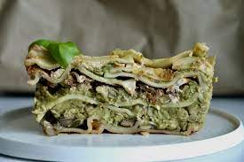

Mama's Lasagna

THE WILD MUSHROOM GREEN VEGAN LASAGNA WITH 2 MULTI-PURPOSE SAUCES
A comfort food fave, with a twist. This green vegan lasagna is so yum, and perfect for these fall feels. Make a big batch, or a few dishes worth to freeze for a dinner freak out kinda day! That’s my jam. I don’t like spending hours in the kitchen prepping one day for the full week… instead, I make the most of when I actually am in the kitchen. If I’m chopping an onion, I chop 3, and put them in the fridge for a different recipe… If I’m making lasagna, I make A LOT of it so leftovers can flow like an awesome mountain bike trail that just keeps on giving.
Ingredients
- 1 box lasagna noodles
- 1 sweet or yellow onion, diced
- 2 cups chopped wild mushrooms
- 2 cloves garlic,minced
- 2 tbsp italian seasoning
- 1 jar tomato pasta sauce
Cashew Cheese Sauce
- 1.5 cups soaked cashews
- 1/4 cup nutritional yeast
- 1/2 tsp salt
- 1 tsp garlic powder
- 1 tsp onion powder
- 1/2 cup unsweetened plant milk
Steps
- Pre-heat oven to 350F
- Sauté the onions, mushrooms, Italian seasoning, and garlic with a bit of water if it’s sticking.
- Cook noodles according to directions (some lasagna noodles don’t need to be pre-boiled). Bring a pot of water to a boil, add noodles and salt, let cook for the time told, strain and run cold water over them.
- Make the Green Sauce: Add all the green sauce ingredients except for the lentils to your blender and whiz it up until smoooooooth. (you can use this sauce as a dip, pasta sauce or a spread for your wraps)… Then stir in the lentils.
- Layer it up! Start with tomato sauce on the bottom of your baking dish (around 13 x 9-inches), then a layer of noodles, then green sauce, cheese sauce, onion + wild mushroom saute, tomato sauce, and repeat. Finish it off with noodles, then cheese sauce on top!
- Cover with tin foil and bake for 40 minutes. Remove foil and bake for another 10 minutes
- Let sit for 10, and serve with fresh basil